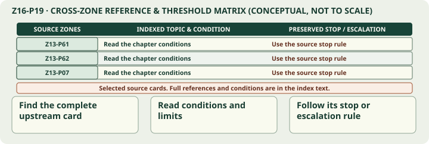

Z16-P19 · Field reference atlas · New manuscript
Seasonal Home Utility Resilience Calendar Index
Locate the original encyclopedia cards for seasonal Home Utility Resilience Calendar Index.
When it applies · Offline reference lookup. The linked chapter defines the situation, audience and limits.
Equipment · Offline reader or the complete linked source cards in print.

Actions
- Open Z13-P61 for complete an autumn pre-winter residential utility readiness checklist; Z13-P62 for complete a spring and summer residential utility resilience check.[A10, U03, D05]
- Open Z13-P07 for isolate generator circuits properly and never backfeed a wall outlet; Z15-P34 for resolve compound smoke-plus-extreme-heat emergencies safely.[A10, U02, D06]
- Read the linked card’s applicability, equipment and stop conditions together. Keep review and source limitations attached to any excerpt.[A10, ED]
Failure recognition · Acting on a keyword or title while overlooking an upstream exception or stop condition.[A10, ED]
Verify · Confirm the exact page ID and read the full conditions before using the reference.[A10, ED]
Stop or change course · If the situation falls outside a linked card’s conditions or its stop rule applies, stop using this index as a decision aid. Follow the full card and current local directions.[A10, ED]
Evidence and editorial notes
- A10 · FEMA / Ready.gov · Make a Plan (current web edition)
- Section: Offline reader navigation, historical lineage, and HOLD transparency · Conditions: Using the complete 16-zone offline archive, zone readers, and print proofs
Support: Navigation aids expose draft status, reconstruction lineage, open diagnostic photo needs, and pending specialist holds on every lookup path.
Limitations: This index entry does not independently establish any safety, regulatory or diagnostic instruction. · Conflicting evidence: None noted.
Editorial note: Index design and cross-reference policy. Substantive directions come from linked upstream chapter claims. · Specialist reviewer: Accessibility, print QA, and editorial reviewer
Primary source · checked 2026-11-24 - D05 · FEMA / Ready.gov · Floods (current web edition)
- Section: Floods: During; Turn Around, Don’t Drown · Conditions: Flooded roads or trails, flood alert, or post-flood re-entry
Support: Move to safe higher ground when directed, never walk or drive into floodwater, and respect closures and re-entry restrictions.
Limitations: Depth examples are warning illustrations, never safe entry thresholds. Trapped or submerged vehicles require emergency help and scene-specific response. · Conflicting evidence: See A02 claim audit for boundaries.
Editorial note: Core flood evacuation, water-avoidance, and safe re-entry evidence. · Specialist reviewer: Emergency management and flood hydrology
Primary source · checked 2026-11-24 - D06 · US EPA / AirNow · Wildfires and Air Quality (current web edition)
- Section: Wildfires and Air Quality > AQI Categories and Exposure Reduction · Conditions: Regional or local wildfire smoke plumes impacting air quality
Support: Monitor live official AirNow AQI readings and local health advisories; move indoors with windows/doors closed during Unhealthy AQI levels, limit heavy exertion, and use properly fitted NIOSH-approved N95/P100 particulate respirators if essential outdoor exposure cannot be avoided.
Limitations: Surgical masks, bandanas, and dust masks do not seal against fine PM2.5 wildfire smoke particles; N95s do not protect against carbon monoxide or low oxygen. · Conflicting evidence: None; complements C19 and READY-WILDFIRE.
Editorial note: Grounds AQI smoke thresholds and respiratory protection limits in Z15. · Specialist reviewer: Environmental health and air-quality specialist
Primary source · checked 2026-11-24 - U02 · CPSC · CPSC Warns of Generator, Carbon Monoxide and Fire Hazards Ahead of Hurricane Season (2026 seasonal agency guidance)
- Section: Use portable generators outdoors; keep exhaust away · Conditions: Portable generator during household outage
Support: Run outdoors at least 20 feet from buildings and direct exhaust away. Use approved connections as the manual dictates; licensed electrical work governs transfer to a building. Never backfeed.
Limitations: Distance alone does not guarantee safety. Local code and exact equipment determine installation. · Conflicting evidence: See A02 claim audit for boundaries.
Editorial note: Core electrical isolation boundary across Z13 generator cards. · Specialist reviewer: Licensed electrician and fire safety
Primary source · checked 2026-11-24 - U03 · NFPA · Heating Fire Safety (current web edition)
- Section: Heating Equipment Safety > Space Heaters, Fireplaces, and Clearances · Conditions: Residential winter heating and supplemental backup heating
Support: Maintain at least a 3-foot clearance between anything flammable and any heating source (space heaters, fireplaces, wood stoves), inspect chimneys annually, use only the fuel specified by the heater manufacturer, and never use kitchen ovens to heat homes.
Limitations: Unvented fuel-burning heaters also create severe carbon monoxide and indoor air hazards; local building codes govern installations. · Conflicting evidence: None; aligns with CPSC-C and READY-HOME-F.
Editorial note: Grounds safe supplemental heating clearances and stop boundaries in Z13. · Specialist reviewer: Fire safety and licensed HVAC trades
Primary source · checked 2026-11-24
Source lineage · New manuscript (Z16 P20 seasonal index) · Classification · New manuscript.